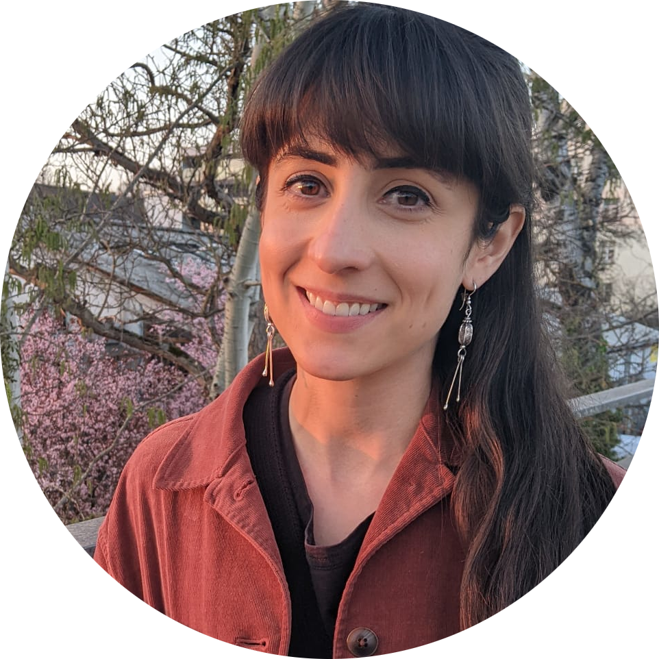

I am a plant ecologist working across scales from global to local, and from broad species pools to communities. The throughline of my research is invasions, which occur when species are brought by people to a new place where they establish long-lasting populations without further help from people, and where they can have large impacts on local ecosystems. I am interested in invasions from both a basic science perspective, using them to better understand how our world works, and from an applied science perspective, providing recommendations to mitigate current invasions or avoid future invasions. Lately, my focus is on the diversity and distributions of cultivated plants, including all species planted and cared for by humans, both because of their implications for invasion and for their services to people and ecosystems. But, I maintain diverse scientific interests, including: how evolutionary relationships determine the species that end up together in a region; how human history (events, policies, land use, etc.) can explain present-day species distributions; and how species interact with one another to form networks that structure communities. I like to use the best possible tools for analyses, and that means that I use a variety of quantitative and computational approaches, including hierarchical, spatial, and Bayesian modeling, simulations, machine learning, and high-performance computing. I am currently working as a postdoctoral researcher in Mark van Kleunen’s lab at the University of Konstanz.
